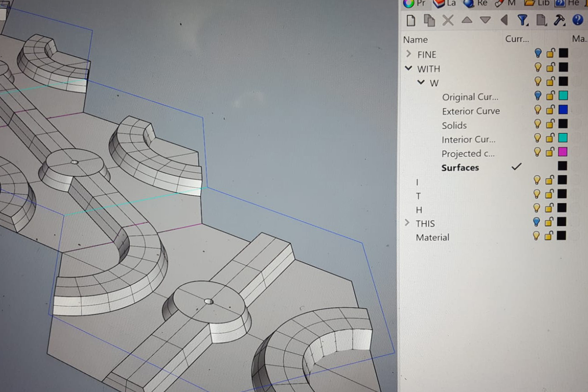
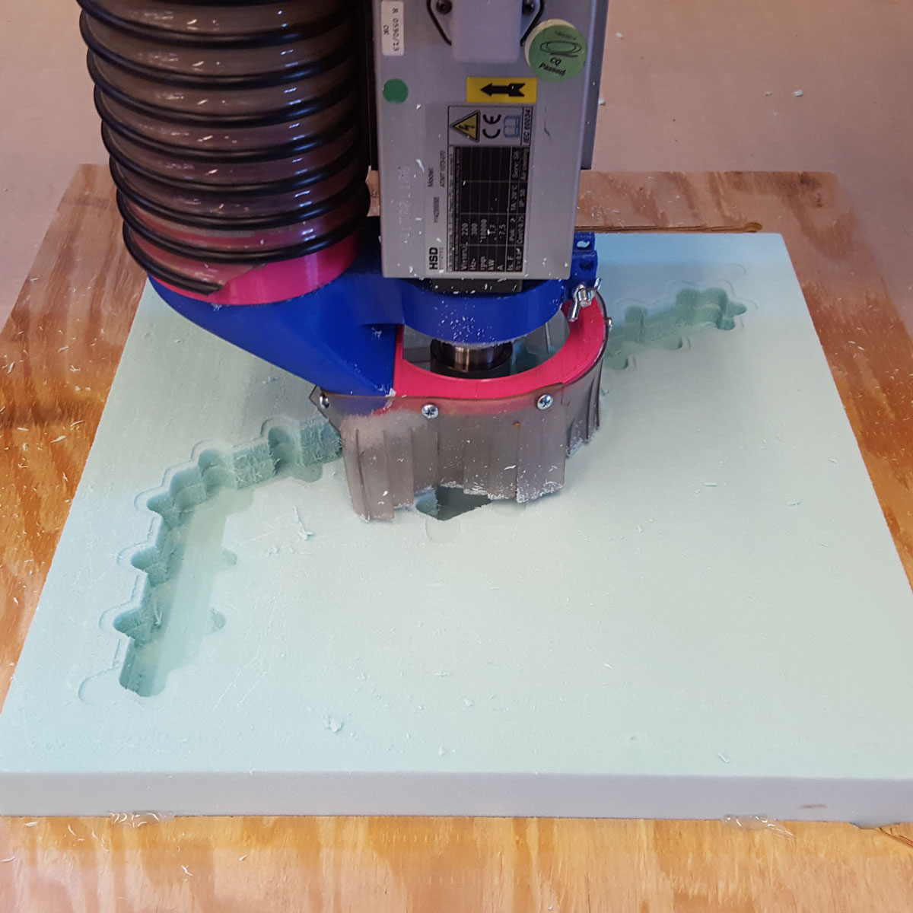
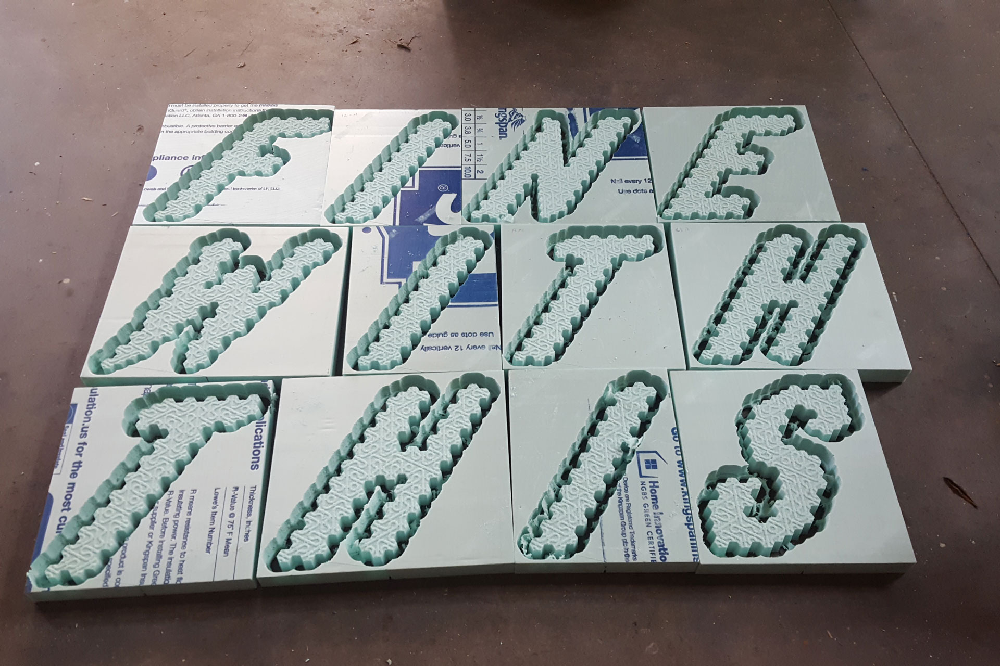
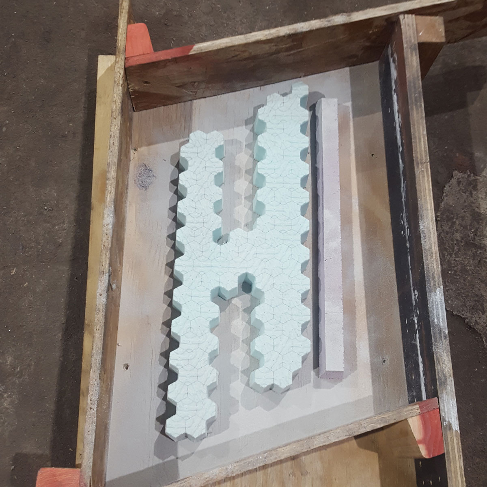
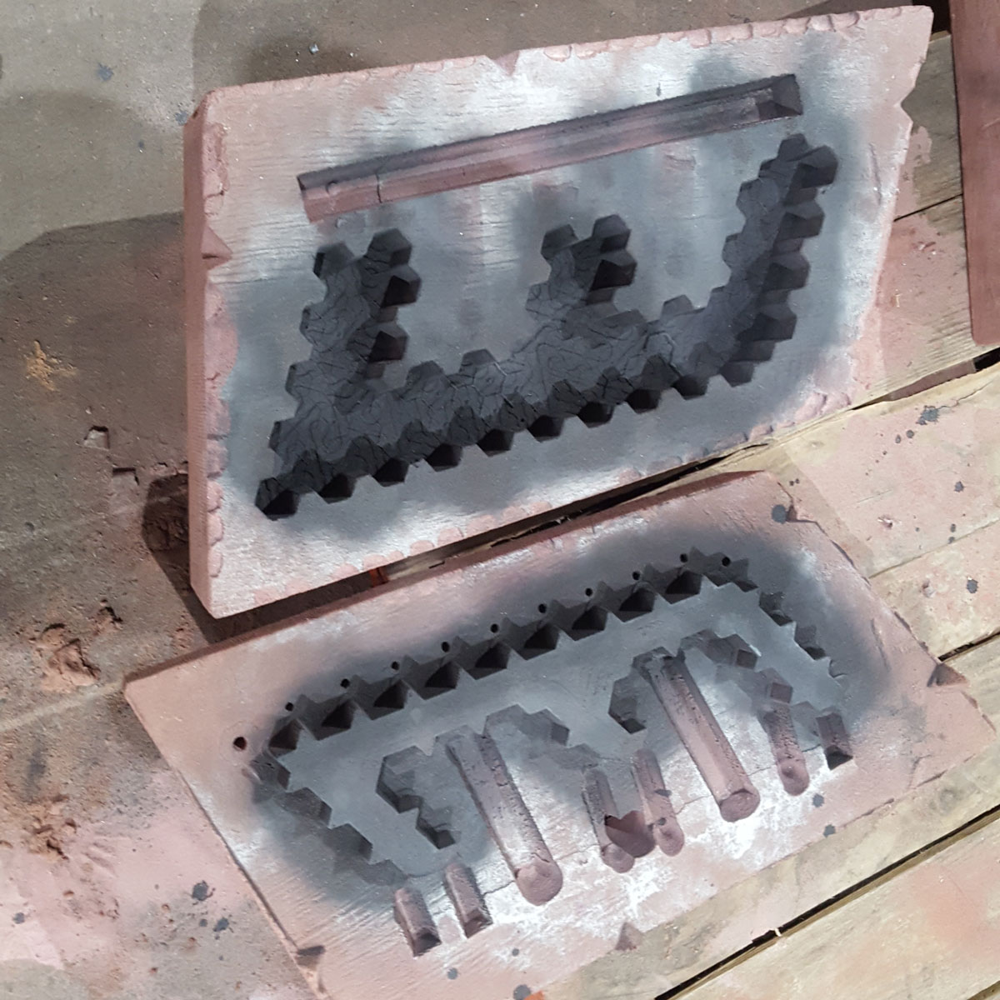
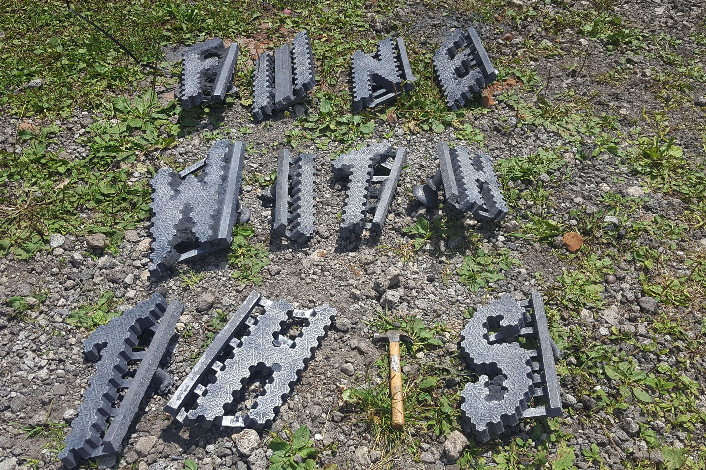
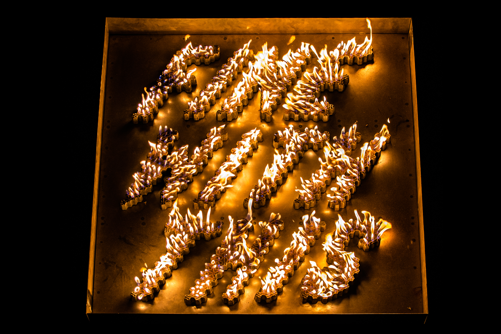
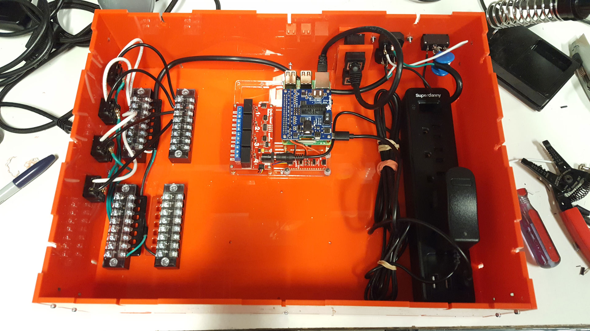

FWT was mostly designed in Rhino. Grasshopper was used to procedurally generate Truchet tile arrangements for each letter.


Once the digital design was complete, letters were carved in foam on the CNC mill.

The foam letters were cast in iron with open chambers, then sealed with plasma-cut sheet steel and high-temperature caulk.

The iron letters are installed in a fabricated steel cart and plumbed with propane.

The propane regulating solenoids are controlled by a Raspberry Pi. This device watches the online chat at twitch.tv, a popular live streaming service. When users post a “secret code”, the Pi fires off an extra large blast of propane (as a reward for donating to a fundraiser, for example).

A video feed of Fine With This streams live to Twitch. This allows users to see the results of chat codes in real time, even if they are located somewhere other than the sculpture.
Our first performance of FWT also featured a live iron pour. Multiple smartphone-based camera feeds were aggregated with Open Broadcast Software, then pushed out to Twitch as a single signal.